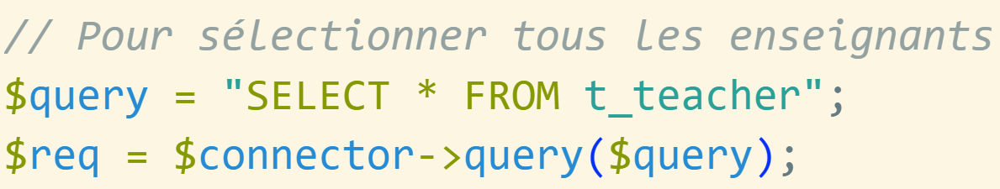
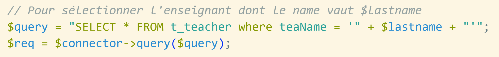

Module 151 - Intégrer des bases de données dans des applications Web
ETML
Injection SQL
Accroche
Pourquoi s’intéresser aux attaques par injection SQL ?
Objectif pédagogique
Protéger une application PHP contre les attaques par injection SQL en utilisant le connecteur PDO
Qu’est ce qu’une attaque par injection SQL ?
Définition
Une injection SQL est un type d’attaque qui permet à un attaquant d’insérer des instructions SQL malveillantes dans une application
Impacts
Exposer des données sensibles
Compromettre l’intégrité des données
Donner à un pirate un accès général à votre système
Exemples d’attaques
Fortnite, 2019
Fortnite est un jeu en ligne qui compte plus de 350 millions d’utilisateurs. En 2019, une vulnérabilité par injection SQL a été détectée, susceptible de permettre aux pirates d’accéder aux comptes des utilisateurs.
Exemples d’attaques
Cisco, 2018
Une vulnérabilité par injection SQL a été détectée dans le gestionnaire de licences Cisco Prime en 2018. La vulnérabilité permettait aux pirates d’obtenir un accès shell aux systèmes sur lesquels le gestionnaire de licences était déployé.
Exemples d’attaques
Tesla, 2014
En 2014, des chercheurs en sécurité informatique ont annoncé qu’ils étaient en mesure de s’introduire sur le site Web de Tesla à l’aide d’une injection SQL, obtenant des privilèges d’administration et volant les données des utilisateurs.
Connecteur PDO
propose 2 méthodes pour exécuter une requête SQL :
méthode query()
méthode prepare()
Méthode query() - Exemple 1

Question : Code sécurisé ?
Méthode query() - Exemple 1
Code sécurisé !
Méthode query() - Exemple 2

Question : Code sécurisé ?
Méthode query() - Exemple 2
Code non sécurisé !
Règle
Nous devons utiliser la méthode prepare() dès que la requête SQL est créée à partir d’une concaténation des valeurs saisies par l’utilisateur